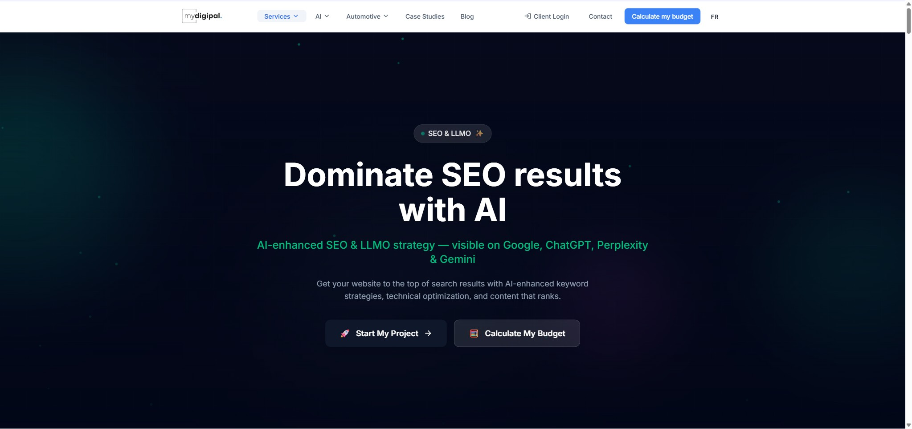
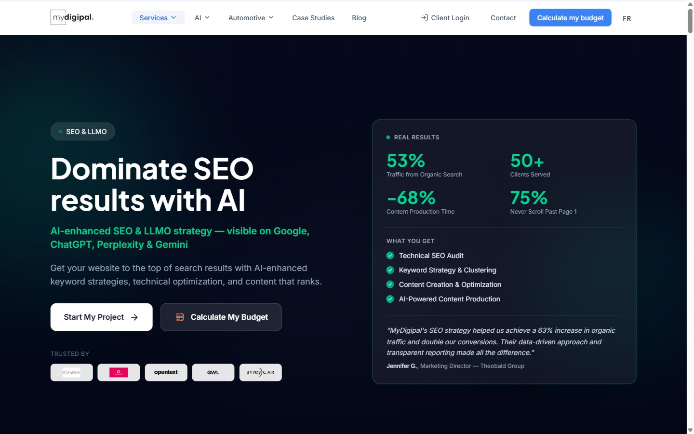
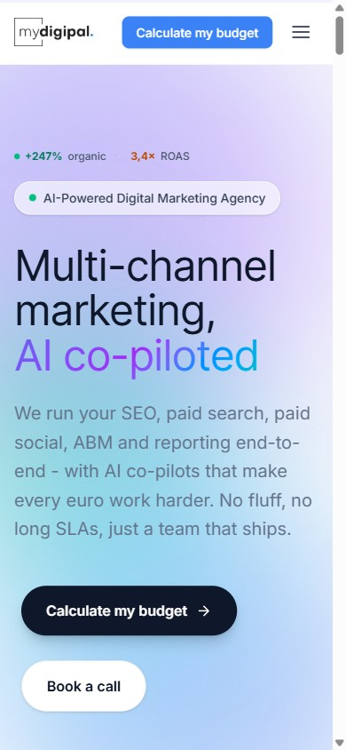
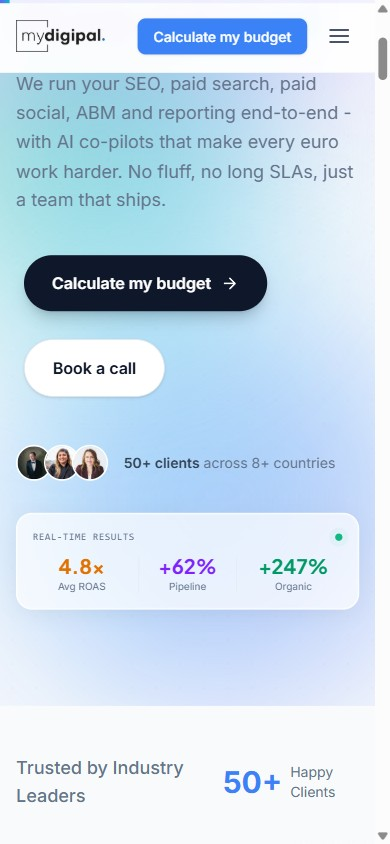

1Diagnostic data (BigQuery GA4, avril-mai 2026)
Le "33s / 28%" du GA4 est une moyenne trompeuse. Par page, la realite est nette : la home retient, les pages services et le blog font fuir.
Pages d'atterrissage (les plus trafiquees)
| Page | Sessions | Bounce | Dwell | Conv. | Verdict |
|---|---|---|---|---|---|
| /en (home) | 1 562 | 38,7% | 96 s | 12 | Sain |
| /fr (home) | 318 | 27,7% | 120 s | 0 | Sain |
| /fr/services/ai-training | 649 | 52,7% | 37 s | 1 | Fuite |
| /fr/services/seo | 473 | 52,2% | 34 s | 0 | Fuite |
| /en/services/ai-training | 436 | 53% | 18 s | 1 | Fuite |
| /en/services/b2b-abm | 408 | 60,3% | 41 s | 0 | Fuite |
| /fr/services/google-ads | 231 | 80,1% | 15 s | 0 | Critique |
| /en/blog/ai-agents-n8n-automation | 228 | 88,6% | 47 s | 0 | Critique |
Funnel casse en haut
| Visiteurs (first_visit) | 6 004 |
| Scroll a 90% | 842 (~13%) |
| Clic CTA | 337 (~5%) |
| Calculateur demarre | 24 |
| Calculateur termine | 3 |
| Contact (conversion) | 19 |
Mobile sous-performe
| Device | Sessions | Conv. |
|---|---|---|
| Desktop | 3 912 | 25 |
| Mobile | 1 677 | 3 |
| Tablet | 28 | 0 |
Le mobile = 30% du trafic mais convertit 3,5x moins que le desktop.
2Les 3 fuites principales
Pages services : hero vide
Hero sur fond sombre = un titre vague + 2 boutons + un grand vide. Aucune preuve, aucun "ce que vous obtenez" above the fold. Resultat : bounce 50-80%, dwell 15-40s, ~0 conversion. C'est la ou atterrit le trafic payant.
Blog : pas de traction
Les articles qui captent l'organique bouncent a 85-88% : aucun pont vers l'etape suivante. Le seul article gated (abm-deck) convertit a 8/34 sessions - preuve que le contenu gated marche.
Calculateur sous-exploite
Excellent outil (les clients adorent) mais 24 starts / 3 finish. Impose au trafic froid + le prix visible gratuitement = peu de raisons de convertir. A garder et muscler, pas a retrograder.
2 bugs prod
Police Plus Jakarta Sans en 404 (titres en fallback) + tracking lemlist en 400. Detectes en console live.
3Ce qui a ete livre
3.1 - Police self-hosted (fix du 404)
Le @font-face hardcodait une URL gstatic v8 que Google a retiree (404). Les woff2 Inter v20 + Plus Jakarta Sans v12 (latin + latin-ext pour les accents FR) sont desormais heberges dans /public/fonts, charges en local. Plus de 404, plus de requete externe render-blocking.
3.2 - Hero des pages services (la plus grosse fuite)
Un seul composant partage (HeroService.astro) corrige les 9 pages. Layout 2 colonnes : message + CTA + logos clients a gauche, panneau preuve a droite (resultats chiffres, "ce que vous obtenez", temoignage). Visible above the fold y compris sur mobile.


3.3 - Blog : CTA contextuels par categorie
Nouveau composant BlogServiceCTA.astro qui mappe la categorie de l'article vers le bon service (ai -> Formation IA, seo -> SEO, paid-ads -> Google Ads, abm -> B2B/ABM, marketing-ops -> Tracking), avec un pitch sur mesure. Deux placements : carte compacte juste apres le corps de l'article + section riche en bas. Remplace le "Contact us" generique. Bilingue.
3.4 - Calculateur : chemin "reserver un appel"
Ajout d'un chemin a faible friction dans le CaptureModal (etat formulaire + etat succes) : "Reserver un appel de 15 min" vers le calendrier MyDigipal. Capte les visiteurs qui ont configure un plan, vu le prix, mais ne rempliront pas le formulaire email.
3.5 - Hero mobile de la home
Les cartes storytelling du hero sont hidden lg:block : invisibles sur mobile. Le mobile ne voyait qu'un titre + un long paragraphe + des CTA. Description resserree + carte preuve mobile-only ("Real-time results" : 4.8x ROAS / +62% pipeline / +247% organique) pres de la ligne de flottaison.


4Reste a faire
A cocher au fur et a mesure. Notes editables en bas (bouton Save en bas a droite).
app.lemlist.com/api/visitors/tracking?k=...&t=tea_... renvoie un 400 (corps vide), en navigateur reel comme en serveur : la cle k/t est expiree ou l'endpoint est deprecie cote lemlist. On ne supprime pas le tag. Il faut recuperer le snippet de tracking a jour dans ton compte lemlist (Settings -> Website visitors / tracking) ; des que tu me le donnes, je remplace le contenu du tag 144 en 30 secondes.
Notes / decisions
5Benchmark 2026
Ce que disent les references et ce qu'on a applique.
6Comment Claude code tout ca dans GitHub
Stack Astro 6 + Tailwind 4 + React islands sur le repo MyDigipal/mydigipal-website, deploy Render auto a chaque push sur main.
Toutes les ameliorations ci-dessus ont ete faites directement dans le repo, sans nouvelle dependance ni techno :
- Les composants V2 (logos, metrics, magnetic buttons, glass cards) existaient deja - on les a recomposes.
- Les donnees de preuve (metrics, features, temoignages) etaient deja dans les fichiers MDX des services - on les a juste remontees dans le hero.
- Les effets "a la Scale/Awwwards" sont reproduits en CSS natif +
scroll.ts(pas de Framer payant). - Workflow : edit -> build local -> commit -> push -> Render deploie en ~2-3 min. 3 commits propres, chacun build-verifie.
Captures et detail technique : ce dossier docs/site-review/. Memoire projet : site_review_action_plan_may2026.md.